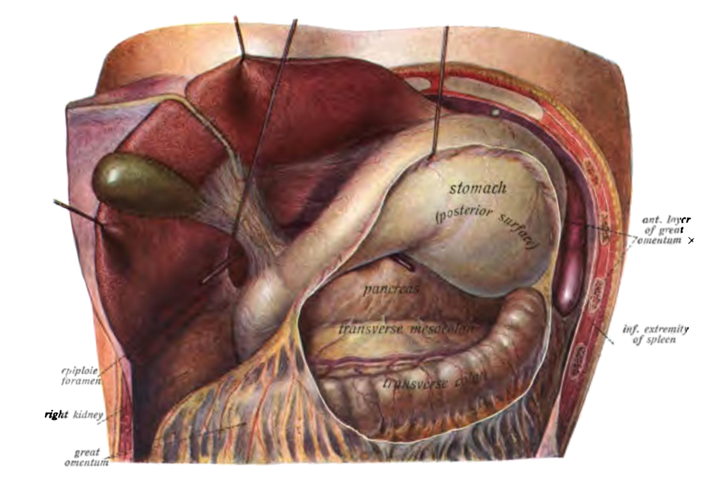
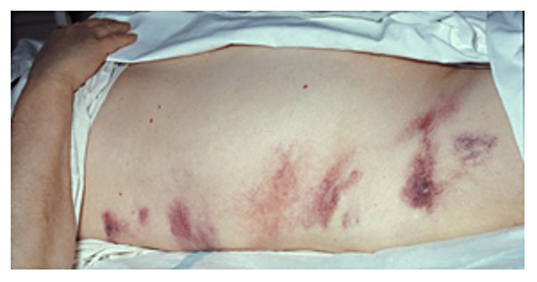
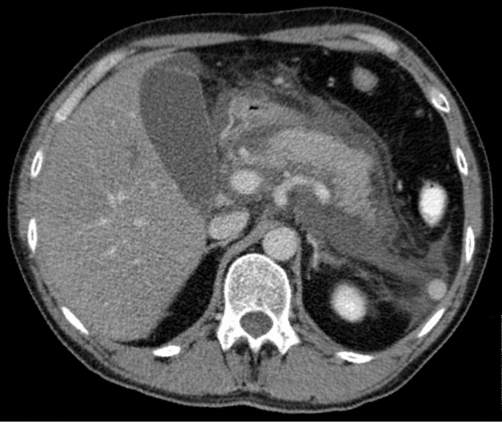

דיון מקרים: פנקריאטיטיס
שלושה מטופלים בדויים: מאבחנה וחומרה דרך נוזלים ותזונה ועד נמק נגוע ופסאודוציסטה
בסוף המפגש תדעו
- לאבחן פנקריאטיטיס חריפה לפי שניים משלושה קריטריונים ולדעת מתי באמת צריך CT
- להעריך חומרה (קלה, בינונית או קשה) ולהכיר את הכלים לחיזוי (SIRS, BISAP, Ranson)
- לרשום טיפול ראשוני: נוזלים במינון סביר, משככי כאבים, הזנה מוקדמת ובלי אנטיביוטיקה מונעת
- לתזמן ERCP וכריתת כיס מרה בפנקריאטיטיס ביליארית
- לסווג אוספים סביב הלבלב ולהסביר את גישת ה״צעד אחר צעד״ בנמק נגוע
פנקריאטיטיס חריפה במספרים
תמותה בשני שלבים
- שבועיים ראשונים: כשל רב-מערכתי מהתגובה הדלקתית
- אחרי שבועיים: בעיקר סיבוכים זיהומיים, למשל נמק נגוע
המנגנון בקצרה
- הפעלה מוקדמת של טריפסין בתוך תאי האצינוס, עיכול עצמי של הבלוטה ושחרור ציטוקינים
סיבות שכדאי לזכור
- אבנים: השכיחה במערב (40% בארה״ב). נשים בגיל 50–70
- אלכוהול: השנייה (35%). גברים צעירים
- אחרי ERCP: הסיבוך השכיח שלה, עד 5%
- טריגליצרידים מעל 1000 מ״ג/ד״ל, היפרקלצמיה, תרופות (עד 2%), חבלה
- גידול בלבלב יכול לחסום את הצינור, אבל לרוב לא גורם לפנקריאטיטיס
איפה הלבלב יושב ולמה זה משנה

👆 לחצו על אזור בציור כדי לקרוא עליו
בציור הקיבה מורמת כלפי מעלה. מאחוריה נמצא השק הקטן. ברצפת השק: הלבלב. פסאודוציסטה או נמק מוקף שצמודים לדופן האחורית (פחות מ-1 ס״מ) מנוקזים דרך הקיבה, באנדוסקופיה או בניתוח (ציסטוגסטרוסטומיה).
הלבלב רטרופריטונאלי ושוכב מאחורי הקיבה, לפני החוליה המותנית הראשונה. כשהוא מודלק, נוצרים סביבו אוספי נוזל ונמק. חלקם צמודים לדופן האחורית של הקיבה. זה מה שמאפשר לנקז אותם דרכה.
יוצא מהגבול התחתון של הלבלב. בצילום בטן בפנקריאטיטיס אפשר לראות ״קטיעה״ של הגז במעי הגס בכפף הטחולי, בגלל עווית של המעי.
קרוב מאוד ללבלב. בצילום בטן בפנקריאטיטיס רואים לעיתים מפלסי נוזל-אוויר של אילאוס. צילום לא עוזר לאבחנה, אבל עוזר לשלול ניקוב של כיב.
זנב הלבלב מגיע עד שער הטחול. הדלקת יכולה לפגוע בעורק הטחול (פסאודואנוריזמה מדממת) או לגרום לפקקת בווריד הטחול, עם דליות בקיבה. דימום חוזר מהדליות האלה מטופל בכריתת טחול.
אבנים בכיס המרה הן הסיבה השכיחה ביותר לפנקריאטיטיס במערב (כ-40% בארה״ב). אחרי פנקריאטיטיס ביליארית קלה מוציאים את כיס המרה עוד באותו אשפוז.
השק הקטן (omental bursa) נפתח: הקיבה מורמת כלפי מעלה, הלבלב נראה מאחוריה ומתחתיו המעי הגס הרוחבי · Sobotta, Atlas and Text-book of Human Anatomy (1906), איור 406 (נחלת הכלל)
רחל, 62, כאב באפיגסטריום
- כאב חזק ומתמשך באפיגסטריום שמקרין לגב, החל לפני 8 שעות אחרי ארוחה
- הקאות שלא מקלות על הכאב
- ידועה עם אבנים בכיס המרה, לא שותה אלכוהול
- דופק 104, לחץ דם 128/76, חום 37.6, סטורציה 97%
- בבדיקה: רגישות באפיגסטריום, בלי סימני גירוי צפקי
- ליפאז פי 8 מהערך העליון
- ALT מוגבר, בילירובין מעט מוגבר
- לויקוציטוזיס, סוכר מוגבר
- המוגלובין והמטוקריט גבוהים (התייבשות)
שניים משלושה מספיקים
הבטן בפנקריאטיטיס

כמה היא חולה?
ההגדרה המעודכנת (2012)
כלים לחיזוי
- SIRS: פשוט וזול. מומלץ על ידי אגודות רבות. תמותה של 25% ב-SIRS מתמשך, 8% בחולף, 0% בלי SIRS
- BISAP: חמישה פרמטרים ב-24 השעות הראשונות (אוריאה, מצב הכרה, SIRS, גיל מעל 60, תפליט פלאורלי). מתחת ל-1% עד מעל 20% תמותה
- Ranson: 11 פרמטרים, שישה מהם רק אחרי 48 שעות. 3 ומעלה: קשה. טוב בעיקר לשלילה
- CRP של 150 ומעלה אחרי 48–72 שעות · APACHE II של 8 ומעלה
נוזלים, כאב ואוכל
- קריסטלואידים איזוטוניים. רינגר לקטט עשוי להיות עדיף על סליין (פחות SIRS ב-24 שעות)
- לא "כמה שיותר": מתאימים לגיל, למחלות הרקע, לסימנים החיוניים ולתפוקת השתן
- ב-WATERFALL טיפול אגרסיבי גרם לעומס נוזלים ב-21% לעומת 6%, בלי תועלת
- אופיואידים, בעיקר מורפין. אין הוכחה שהם מזיקים במחלה
- מד סטורציה רציף. חמצן לשמירה על סטורציה מעל 95%
- הזנה מוקדמת, תוך 24–72 שעות
- מחקר ספרדי: דיאטה מוצקה דלת שומן מיד בקבלה. פחות סיבוכים (4.2% לעומת 18.3%) ואשפוז קצר יותר (3.4 לעומת 8.8 ימים)
ERCP או ניתוח? ומתי?
ERCP: רק כשיש סיבה
- שגרתית ומוקדמת: לא, בשום דרגת חומרה. החסימה בדרך כלל חולפת תוך 48 שעות
- כן: כולנגיטיס, או חסימה מתמשכת שהוכחה בהדמיה
- לבירור אבן בצינור: EUS או MRCP, בלי סיכון להחמיר את הדלקת
- מבוגר שלא מתאים לניתוח: ERCP עם ספינקטרוטומיה למניעת התקף חוזר
כריתת כיס מרה
- בלי טיפול: 30% יחזרו עם פנקריאטיטיס ביליארית
- מחלה קלה: כריתה לפרוסקופית באותו אשפוז. בטוח ומוריד חזרות
- מחלה קשה: טיפול שמרני 6 שבועות לפחות לפני הניתוח
- אבן בצינור שוללים בצילום מרה בניתוח, EUS או MRCP
דני, 45, אלכוהול ונשימה מהירה
- שותה כבד שנים רבות. יומיים של כאב קשה באפיגסטריום והקאות
- ביום השני באשפוז: נשימה מהירה, PaO2 של 56, קראטינין 2.6 אחרי נוזלים
- הבטן תפוחה ורגישה. בדיקת חזה: עמימות בבסיס השמאלי
- ב-72 שעות: עדיין אי-ספיקה נשימתית וכלייתית
פנקריאטיטיס קשה
- חומרה: אי-ספיקת איברים מעל 48 שעות היא קשה. נשימה וכליות: מעקב צמוד, לעיתים עם צנתר מרכזי וקטטר. לרוב בטיפול נמרץ
- חמצן: פגיעה ריאתית חריפה היא מהסיבוכים המערכתיים השכיחים. תפליט פלאורלי משמאל מתאים לפנקריאטיטיס
- CT: כאן יש אינדיקציה, כי המטופל לא משתפר. מחפשים נמק: אזורים שלא נצבעים (מתחת ל-40–50 יחידות, לעומת 100–150 ברקמה תקינה)
מדד החומרה ב-CT (CTSI)
מה רואים ב-CT


ארבעה שמות, שני צירים
ציר אחד: נוזל בלבד או נמק. ציר שני: פחות או יותר מ-4 שבועות
חום, ירידה בלחץ דם וגז בנמק
- האבחנה: חשד קליני (חום ממושך, הידרדרות, אי-ספיקה מאוחרת אחרי יום 7). גז ב-CT מאשר. כשלא ברור: דגימה במחט לצביעת גרם ותרבית
- חיידקים: בעיקר מהמעי (E. coli, Klebsiella, אנטרוקוקים)
- אנטיביוטיקה: קרבפנמים קודם, בגלל החדירה ללבלב. חלופות: קווינולונים, מטרונידזול, צפלוספורינים מדור 3, פיפרצילין
גישת "צעד אחר צעד"
שלושה מחקרים הולנדיים ששינו את הטיפול
ניקוז מלעורי ואחריו ניקוי זעיר-פולשני, מול נקרוזקטומיה פתוחה מוקדמת. בגישה ההדרגתית: פחות תמותה ופחות אי-ספיקה אקסוקרינית ואנדוקרינית בטווח הארוך
כפי שמסוכם ב-Sabiston 22, פרק 92 עמ׳ 1386הגישה האנדוסקופית לא עדיפה בתמותה, אבל עם פחות פיסטולות, אשפוז קצר יותר ועלות נמוכה יותר
כפי שמסוכם ב-Sabiston 22, פרק 92 עמ׳ 1386104 מטופלים עם נמק נגוע. אותם סיבוכים ואותה תמותה. בדחייה: פחות התערבויות (2.6 לעומת 4.4). חלק מהמטופלים לא נזקקו לניקוז בכלל
כפי שמסוכם ב-Sabiston 22, פרק 92 עמ׳ 1386–1387שמונה שבועות אחרי: שובע מוקדם
- אבחנה: פסאודוציסטה. מופיעה ב-5–15% מהאוספים אחרי פנקריאטיטיס חריפה. הדופן נבנית במשך 4–8 שבועות לפחות
- כשלא ברור אם זו ציסטה ניאופלסטית: EUS עם דגימה. בפסאודוציסטה: עמילאז גבוה, CEA נמוך ובלי מוצין
כאב פתאומי, דופק 130 ולחץ דם 80
- אלסטאז מהלבלב פוגע בדופן העורק. השכיח ביותר: עורק הטחול. גם הגסטרודואודנלי, המזנטרי העליון ועורק כיס המרה
- כאב בטן פתאומי, טכיקרדיה ותת-לחץ דם
- טיפול: החייאה וצנתור לתסחיף. כשלא מצליח: קשירת העורק בניתוח
- תמותה: 28–56%
- הדלקת גורמת לפקקת, לעיתים עד מערכת הפורטל
- בהדמיה: טחול מוגדל ודליות בקיבה
- רוב המטופלים: טיפול שמרני. נוגדי קרישה לא שיפרו את הפתיחה מחדש של הווריד
- דימום חוזר מהדליות בקיבה: כריתת טחול
מחקרים שכדאי להכיר
249 מטופלים, 18 מרכזים. רינגר לקטט אגרסיבי (בולוס 20 מ״ל/ק״ג ואחריו 3 מ״ל/ק״ג/שעה) מול מתון. עומס נוזלים: 20.5% לעומת 6.3%, בלי שיפור בחומרה. המחקר נעצר מוקדם
de-Madaria E et al. N Engl J Med 2022;387:989-1000104 מטופלים עם נמק נגוע. ניקוז מיידי מול ניקוז אחרי שהנמק מוקף דופן: אותם סיבוכים. התערבויות: 4.4 לעומת 2.6. ב-39% מקבוצת הדחייה הספיקה אנטיביוטיקה בלי ניקוז
Boxhoorn L et al. N Engl J Med 2021;385:1372-81אנדוסקופי מול כירורגי בנמק נגוע: אותו שיעור מוות וסיבוכים קשים (53% לעומת 57%). באנדוסקופי פחות פיסטולות לעור (8% לעומת 34%) ופחות התערבויות חוזרות
Onnekink AM et al. Gastroenterology 2022;163:712-22חמישה דברים לקחת למחלקה
- שניים משלושה (כאב, אנזימים פי 3, הדמיה) הם האבחנה. אולטרסאונד לכל אחד, CT רק כשיש סיבה
- החומרה נקבעת לפי אי-ספיקת איברים ומשכה. SIRS מתמשך הוא סימן אזהרה
- נוזלים במינון מותאם (לא אגרסיבי), אוכל מוקדם, בלי אנטיביוטיקה מונעת
- ביליארית קלה: כריתת כיס מרה באותו אשפוז. ERCP רק בכולנגיטיס או בחסימה מוכחת
- נמק נגוע: אנטיביוטיקה ולחכות לדופן. אחר כך צעד אחר צעד. ניתוח פתוח מוקדם הורג